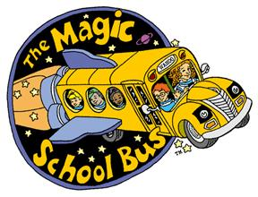

The Magic School Bus (Aired 1994-1998)
Rating: 8/10
Age Restriction: TV-Y
A eccentric teacher takes her class to educational field trips with the help of a magical school bus.
Creators: Joanna Cole, Bruce Degen
Cast
Lily Tomlin as .... Ms. Valerie Frizzle
Daniel DeSanto as .... Carlos Ramon
Erica Luttrell as .... Keesha Franklin
Tara Meyer as .... Dorothy Ann
Maia Filar as .... Phoebe Terese
Lisa Jai as .... Wanda Li
Stuart Stone as .... Ralphie Tennelli